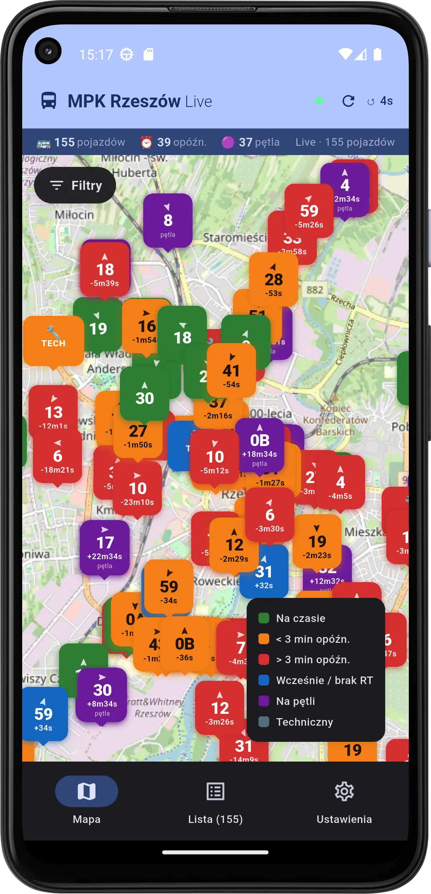
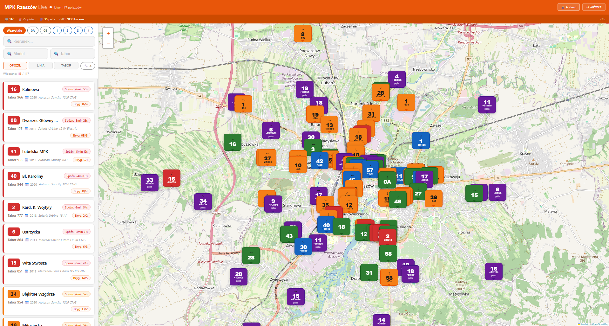

Mapa w czasie rzeczywistym, opóźnienia, numery linii, rok produkcji taboru i najbliższy przystanek — wszystko w jednym miejscu.
Działa w każdej przeglądarce — bez instalacji.
Kolorowe markery autobusów na mapie OSM, lista pojazdów z filtrami, chipy linii, przejazdy techniczne, rok produkcji i przystanek — wszystko odświeżane co 15 sekund.
Otwórz tracker →Dostępne na Android, Bindoj i Linux — wszystkie bezpłatne i open source.
Dane z GTFS Realtime MPK Rzeszów, odświeżane co 15 sekund.
Podgląd aplikacji — Android i przeglądarka.


Serwis nie zbiera żadnych danych osobowych użytkowników.
Serwis korzysta z zewnętrznych zasobów:
Aplikacja:
Cały projekt jest open source na licencji MIT.